Personas
Stories worth sharing.
Un espacio para la cultura, la creatividad, las personas y las ideas.


Empieza a explorar
La curiosidad te queda bien.
Ideas, personas e historias que te invitan a mirar un poco más de cerca.
Cultura
Descubre algo que no sabías que necesitabas.
Explorar culturaPerspectivas
Siempre hay más en la historia.
Leer opinionesConversaciones
Cada voz tiene una historia.
Conoce a nuestros invitadosDel archivo
Todavía vale la pena escucharlo.
Las conversaciones donde empezó todo. Vuelve a los episodios de Café Con Dos en tu plataforma favorita.
Café Con Dos · El podcast
Las buenas conversaciones nunca terminan del todo.
Mira los episodios anteriores y elige dónde verlos o escucharlos.


Un poco más de nosotros
Más que una conversación.
Café Con Dos es una plataforma independiente que explora la cultura, la creatividad, las personas y las ideas a través de historias, conversaciones y nuevas perspectivas.
Conócenos¿Tienes una historia que compartir?
Siempre nos da curiosidad conocer a las personas, los proyectos y las ideas que vale la pena descubrir.
HablemosEn redes
Lo que pasa entre publicación y publicación: clips, fotos y behind the scenes.
Café para llevar
Te llega un email cuando publicamos algo nuevo: historias, opiniones, Sobremesa o un episodio. Cero spam.